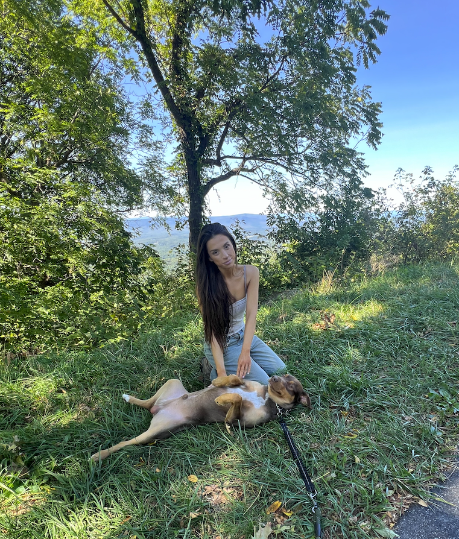

Maria Bowser
TS/SCI CI Poly Software + Reverse Engineer
Northern VA,
non-remote OK
linkedin
resume docx
or pdf
Skills
- Software Engineering
- Reverse Engineering
- UX and UI
- Python, C, Java, JS, HTML, CSS, Go
- Ghidra, Valgrind, gdb, gcc
- Linux
- Bash scripting
- Networking
- Cybersecurity
- 3D / AI Rendering
- Wireshark
- Russian
- Japanese
- Communications
- Computer Networking
With 5 years of experience in full-stack software engineering, Maria has a proven track record in both client-facing and highly technical roles, specializing in Agile methodology, cybersecurity, and high-security software development within the Intelligence Community. Recently, she expanded her skill set by contributing to reverse engineering initiatives on an operations team, building on her expertise in distributed networks, big data systems, and secure environments. Maria combines technical precision with strong communication skills to deliver effective solutions in complex, high-stakes settings.
Employment Experience
- Technical Skills: Full-Stack Software Development, Reverse Engineering, Secure Software Design, Big Data Systems, Distributed Networks, UX/UI development
- Programming Languages: Python, C, Java, Go, JavaScript, HTML, CSS, Assembly (x86/x64)
- Tools: Linux, Ghidra, gdb, Valgrind, Wireshark, Bash Scripting, Docker, Kubernetes, VSCode
- Cybersecurity Expertise: Vulnerability Research, OSINT, Network Analysis, Intrusion Detection
- Languages: Japanese and Russian
- Methodologies: Agile Development, CI/CD, Cloud-Based Development
Reverse Engineer and Vulnerability Researcher Verite Group Inc, Dulles, VA | July 2024 – October 2024
- Led reverse engineering initiatives for the cyber operations team, developing a specialized toolchain using Ghidra, Valgrind, gdb, gcc, and advanced networking tools to identify vulnerabilities in mesh architectures, distributed systems, and embedded systems.
- Automated decompilation of complex binaries by designing Python and Bash scripts for large-scale analysis, significantly accelerating vulnerability assessments across distributed architectures.
- Delivered enterprise-grade solutions in air-gapped environments, ensuring secure, isolated system development critical for mission success.
- Contributed linguistic expertise (Russian and Japanese) and technical skills to support diverse, high-stakes cybersecurity operations involving international software.
Software Engineering Consultant Deloitte Consulting, DC Metropolitan Area | June 2021 – June 2024
- Performed full-stack software development in secure, air-gapped environments, delivering high-security solutions that optimized processing speed by 700% and improved backend performance.
- Designed and implemented modular, responsive web applications using CSS, JavaScript, and HTML, enhancing user experience and ensuring scalability for cybersecurity operations.
- Developed Python-based command-and-control (C2) servers for Red Team operations, streamlining command execution and backend automation in secure environments.
- Utilized Wireshark and other network analysis tools for intrusion detection, conducting reverse engineering to identify and mitigate security vulnerabilities.
- Collaborated on full-stack development with a team of engineers, ensuring Agile delivery of secure software solutions tailored to client needs.
- Recognition: Winner of Deloitte’s OSINT Capture the Flag competition (October 2023), showcasing exceptional analytical and cybersecurity expertise.
Software Engineer (Java) PioneerTech, Fairfax, VA | Jan 2021 - Jun 2021
- Full-stack Java Enterprise development for secure Oracle-based projects, utilizing the WildFly/JBOSS stack in a compliance-driven Oracle Certified Associate (OCA) environment.
- Modernized legacy systems, enhancing software reliability and performance through rigorous database debugging and optimization.
- Delivered secure and efficient solutions in an Agile environment by implementing robust security upgrades across legacy architectures.
- Collaborated with cross-functional teams to drive digital transformation initiatives, ensuring adherence to industry security standards and best practices.
- Contributed to backend performance optimization, handling high-volume enterprise data processing and integration tasks.
Software Engineer (Java) Concept Plus, Fairfax, VA | Mar 2020 - Aug 2020
- Developed backend integrations and service-layer mechanics for the DOEHRS-HC contract, supporting DoD personnel health readiness systems.
- Managed massive sensitive data pipelines, ensuring scalability, compliance, and efficient processing of critical DoD legacy systems.
- Utilized Java Enterprise tools, Spring Framework, and RESTful API design to modernize backend systems and ensure seamless integration.
System Engineer Perspecta Inc, Chantilly, VA | Summer 2018, Jan 2019 - Jun 2019
- Engineered data solutions leveraging mobile time-location data to deliver predictive analysis for SIGINT and Activity-Based Intelligence workflows.
- Presented technical findings regularly to leadership, focusing on applications of IoT in operational intelligence scenarios.
- Spearheaded blockchain research and its implementation in public health systems, evaluating use cases for secure and decentralized data handling.
- Utilized analytical tools and scripting to process and visualize large datasets, enabling actionable insights for intelligence application
Education and Certifications
Virginia Tech - B.A. in Economics with a Concentration in Computer Science & Minor in Statistics (Dec 2018)
Certifications: CompTIA Security+, Full Stack Boot Camp (Udacity), Cybersecurity Software Engineering (Deloitte, Oct 2023)
Language Proficiency: Japanese , Russian